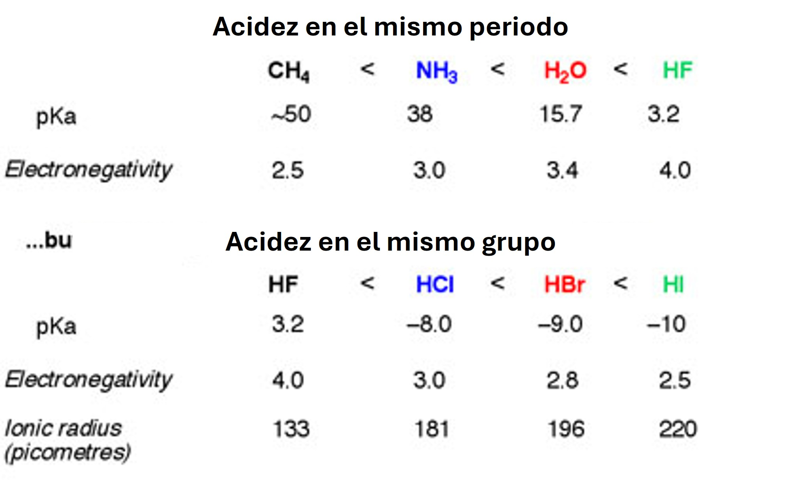
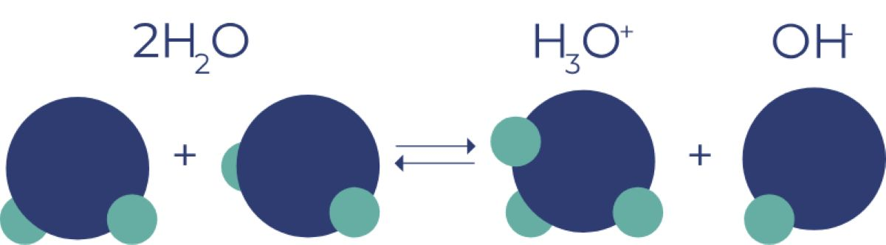
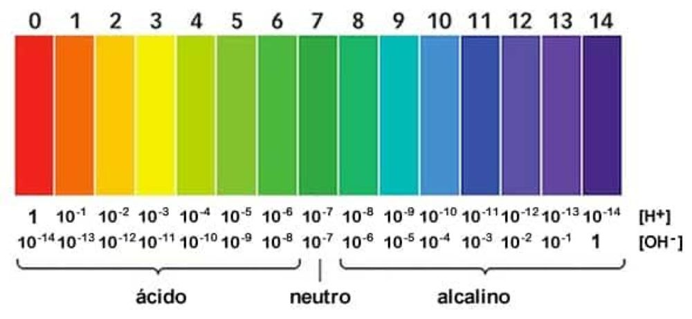
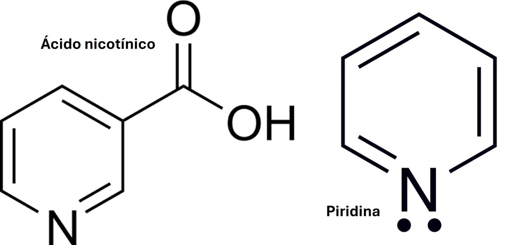
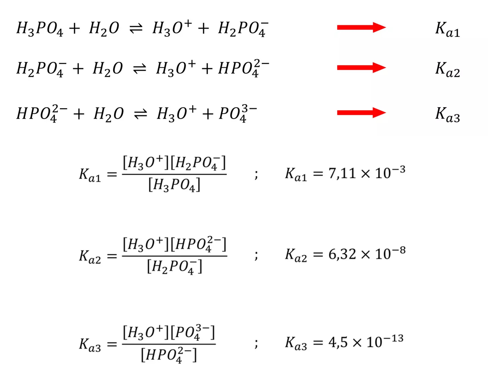

Unidad 3: Equilibrios
Clase 7: Equilibrios Ácido-Base, pH y Ácidos Polipróticos
La fuerza de un ácido depende de varios factores: propiedades del disolvente, temperatura y estructura molecular. Dependiendo de la estructura, se clasifican en binarios (hidrácidos) y ternarios (oxácidos).
La fuerza depende de la polaridad y la energía de enlace H-X. Un enlace más polar facilita la ionización en $H^+$ y $X^-$, pero enlaces fuertes se ionizan menos.
1. Mismo grupo, mismo número de oxidación: La fuerza aumenta con la electronegatividad del átomo central. Ej: $HClO_4 > HBrO_4$ (Cl atrae más la densidad electrónica del O, debilitando el enlace O-H y facilitando la ionización).
2. Mismo átomo central, diferente oxidación: La fuerza aumenta con el número de grupos O enlazados (número de oxidación). Ej: $HClO_4 > HClO_3 > HClO_2 > HClO$

Figura 1: Tendencias de acidez de hidrácidos en la tabla periódica.
Bases Fuertes: Hidróxidos iónicos de metales alcalinos (Grupo IA) y alcalinotérreos (Grupo IIA, excepto Be). Ej: LiOH, NaOH, KOH, Ca(OH)₂. Se disocian totalmente.
Bases Débiles: Compuestos moleculares derivados del amoniaco ($NH_3$). Ej: Metilamina ($CH_3NH_2$), Piridina ($C_5H_5N$), Anilina ($C_6H_5NH_2$). Se ionizan parcialmente.
El ácido más fuerte presenta la base conjugada más débil. Por tanto, para buscar la base más fuerte, buscamos el ácido más débil en su par conjugado.
Ejemplo: ¿Cuál es la base de Bronsted más fuerte? a) Cl⁻ b) ClO₃⁻ c) ClO⁻ d) NO₃⁻ e) Br⁻
Buscamos el ácido más débil del conjunto: HCl (fuerte), HClO₃ (fuerte), HClO (débil), HNO₃ (fuerte), HBr (fuerte).
Como HClO es el ácido más débil, su base conjugada ClO⁻ (opción c) es la base más fuerte.
El agua es una molécula anfiprótica (puede actuar como ácido o base). En agua pura, ocurre el equilibrio:
$$H_2O(l) + H_2O(l) \rightleftharpoons H_3O^+(ac) + OH^-(ac)$$La constante de equilibrio para este proceso se llama constante del producto iónico del agua ($K_w$):
En agua pura: $[H_3O^+] = [OH^-] = 1.0 \times 10^{-7} M$

-->Figura 2: Transferencia de protón entre dos moléculas de agua formando $H_3O^+$ y $OH^-$.
El pH es el logaritmo negativo de la concentración de iones hidronio, una medida directa del grado de acidez:

-->Figura 3: Escala de pH y colores del indicador universal.
Se disocian totalmente en solución. La concentración de $H_3O^+$ o $OH^-$ es igual a la concentración inicial del ácido/base (considerando la estequiometría).
Ejercicio 1: ¿Cuál debe ser el pH de una solución HCl que se prepara mezclando 2 mL de solución concentrada de HCl al 35% en masa y densidad 1,19 g/mL hasta formar 500 ml de solución?
1. Calcular masa de HCl: $m = V \times d \times \% = 2 \text{ mL} \times 1.19 \text{ g/mL} \times 0.35 = 0.833 \text{ g HCl}$
2. Calcular moles: $n = 0.833 \text{ g} / 36.5 \text{ g/mol} = 0.0228 \text{ mol}$
3. Calcular Molaridad: $M = 0.0228 \text{ mol} / 0.5 \text{ L} = 0.0457 \text{ M}$
4. Calcular pH: $pH = -\log(0.0457) = \mathbf{1.34}$
Ejercicio 2: Se mezcla 25 mL de solución de HNO₃ de pH 2,12 con 100 mL de agua. ¿Cuál será el pH de la solución resultante?
1. $[H_3O^+]_{inicial} = 10^{-2.12} = 7.59 \times 10^{-3} \text{ M}$
2. Moles iniciales: $M \times V = 7.59 \times 10^{-3} \text{ mol/L} \times 0.025 \text{ L} = 1.89 \times 10^{-4} \text{ mol}$
3. Nuevo volumen = 125 mL = 0.125 L
4. Nueva $[H_3O^+] = 1.89 \times 10^{-4} / 0.125 = 1.51 \times 10^{-3} \text{ M}$
5. $pH = -\log(1.51 \times 10^{-3}) = \mathbf{2.82}$
Ejercicio 3: ¿Cual es el valor de la $[H_3O^+]$ y el pH de una solución saturada de $Ba(OH)_2$ que contiene 3,9 gramos de $Ba(OH)_2$ por 100 mL de solución? (Masas: Ba=137, O=16, H=1)
1. Masa molar $Ba(OH)_2 = 137 + 2(16) + 2(1) = 171 \text{ g/mol}$
2. Moles = $3.9 / 171 = 0.0228 \text{ mol}$ en 0.1 L $\rightarrow [Ba(OH)_2] = 0.228 \text{ M}$
3. $Ba(OH)_2 \rightarrow Ba^{2+} + 2OH^- \Rightarrow [OH^-] = 2 \times 0.228 = 0.456 \text{ M}$
4. $pOH = -\log(0.456) = 0.34 \Rightarrow pH = 14 - 0.34 = \mathbf{13.66}$
5. $[H_3O^+] = 10^{-13.66} = \mathbf{2.19 \times 10^{-14} \text{ M}}$
Se ionizan parcialmente. El grado de ionización depende de la constante de equilibrio ($K_a$ o $K_b$). A menor constante, más débil es la especie.
Ejemplo (Ácido Débil): El ácido nicotínico ($C_6H_4NO_2H$, abreviado HA) es monoprótico débil. Calcule el pH y su porcentaje de disociación para una solución 0,01 M. $K_a = 1,4 \times 10^{-5}$.
Equilibrio: $HA \rightleftharpoons H^+ + A^-$
ICE: Inicio 0.01M, 0, 0. Cambio: -x, +x, +x. Equilibrio: 0.01-x, x, x.
$K_a = \frac{x \cdot x}{0.01 - x} \approx \frac{x^2}{0.01} = 1.4 \times 10^{-5}$ (Aproximación válida ya que $x$ será muy pequeño).
$x^2 = 1.4 \times 10^{-7} \Rightarrow x = [H_3O^+] = 3.74 \times 10^{-4} \text{ M}$
$pH = -\log(3.74 \times 10^{-4}) = \mathbf{3.43}$
% Disociación $= (x / 0.01) \times 100 = (3.74 \times 10^{-4} / 0.01) \times 100 = \mathbf{3.74\%}$
Ejemplo (Base Débil): Calcule el pH de una solución de piridina 0,02 M. $K_b = 1,7 \times 10^{-9}$.
$C_5H_5N + H_2O \rightleftharpoons C_5H_5NH^+ + OH^-$
$K_b = \frac{x^2}{0.02 - x} \approx \frac{x^2}{0.02} = 1.7 \times 10^{-9}$
$x^2 = 3.4 \times 10^{-11} \Rightarrow x = [OH^-] = 5.83 \times 10^{-6} \text{ M}$
$pOH = -\log(5.83 \times 10^{-6}) = 5.23 \Rightarrow pH = 14 - 5.23 = \mathbf{8.77}$
Ejemplo (Dilución): Un vinagre tiene 5,6% en masa de ácido acético ($HC_2H_3O_2$) y densidad 1,11 g/mL. ¿Qué volumen de este vinagre debe diluirse en agua para obtener 750 ml de una solución de pH 3,52? $K_a = 1,8 \times 10^{-5}$
1. pH final deseado = 3.52 $\Rightarrow [H_3O^+]_{final} = 10^{-3.52} = 3.02 \times 10^{-4} \text{ M}$
2. Usando $K_a$ para la solución diluida: $\frac{x^2}{C - x} = 1.8 \times 10^{-5}$. Como $x = 3.02 \times 10^{-4}$, despejamos C (Molaridad final):
$C = \frac{(3.02 \times 10^{-4})^2}{1.8 \times 10^{-5}} + 3.02 \times 10^{-4} = 5.06 \times 10^{-3} + 3.02 \times 10^{-4} = 5.36 \times 10^{-3} \text{ M}$
3. Moles necesarios en 750 mL: $0.75 \text{ L} \times 5.36 \times 10^{-3} \text{ mol/L} = 4.02 \times 10^{-3} \text{ mol}$
4. Molaridad del vinagre puro: $\frac{5.6 \text{ g}/ 60 \text{ g/mol}}{100 \text{ g} / 1.11 \text{ g/mL} \times (1 \text{ L}/ 1000 \text{ mL})} = 1.036 \text{ M}$
5. Volumen de vinagre puro = Moles / M = $4.02 \times 10^{-3} / 1.036 = \mathbf{3.88 \text{ mL}}$

-->Figura 4: Estructuras de ácidos y bases débiles orgánicos comunes.
Son ácidos de Bronsted-Lowry que pueden donar más de un protón (ej: $H_2CO_3$, $H_3PO_4$). La disociación ocurre por pasos secuenciales.
Siempre se cumple que $K_{a1} > K_{a2} > K_{a3}$, ya que es más difícil perder un protón de una especie cargada negativamente que de una neutra.
Cálculo: Calcule el pH y las concentraciones de todas las especies en una solución de $H_2CO_3$ 0,5 M.
Primera disociación: $K_{a1} = \frac{x \cdot x}{0.5 - x} \approx \frac{x^2}{0.5} = 4.3 \times 10^{-7}$
$x = [H_3O^+] = [HCO_3^-] = 4.64 \times 10^{-4} \text{ M}$
Segunda disociación: $K_{a2} = \frac{[H_3O^+][CO_3^{2-}]}{[HCO_3^-]}$
Como la 2da disociación es mínima, $[H_3O^+] \approx 4.64 \times 10^{-4}$ y $[HCO_3^-] \approx 4.64 \times 10^{-4}$
$5.6 \times 10^{-11} = \frac{(4.64 \times 10^{-4})[CO_3^{2-}]}{4.64 \times 10^{-4}} \Rightarrow [CO_3^{2-}] = K_{a2} = 5.6 \times 10^{-11} \text{ M}$
pH $= -\log(4.64 \times 10^{-4}) = \mathbf{3.33}$
Cálculo: Calcule el pH y todas las especies en una solución de $H_3PO_4$ 0,3 M.
1ra disociación: $\frac{x^2}{0.3 - x} = 7.5 \times 10^{-3}$. Aquí $x$ no es despreciable. Resolviendo la cuadrática: $x = [H_3O^+] = [H_2PO_4^-] = 0.044 \text{ M}$
2da disociación: $\frac{(0.044+y)y}{0.044-y} \approx \frac{0.044y}{0.044} = 6.2 \times 10^{-8} \Rightarrow y = [HPO_4^{2-}] = 6.2 \times 10^{-8} \text{ M}$
3ra disociación: $[PO_4^{3-}]$ es tan pequeña que resulta $5.92 \times 10^{-19} \text{ M}$.
pH $= -\log(0.044) = \mathbf{1.36}$

-->Figura 5: Disociación escalonada de un ácido triprótico como el $H_3PO_4$.
Haz clic en cada nodo para desplegar u ocultar sus ramas.
Haz clic en la tarjeta para voltearla.
Ingresa la concentración de $H_3O^+$ o $OH^-$ para una solución de Ácido o Base Fuerte.
Calcula el pH asumiendo que $x$ es despreciable frente a $C_i$.
El pH sanguíneo se mantiene en 7.4 principalmente por el sistema buffer ácido carbónico / bicarbonato:
$$H_2CO_3(ac) \rightleftharpoons H^+(ac) + HCO_3^-(ac)$$Un aumento en la presión parcial de $CO_2$ (hipercapnia) desplaza el equilibrio hacia la derecha (Principio de Le Chatelier), aumentando $[H^+]$ y causando acidosis respiratoria. Los ácidos polipróticos como el $H_2CO_3$ son fundamentales para entender este sistema fisiológico.
La mayoría de los fármacos son ácidos o bases débiles. En el estómago (pH ~1.5), los ácidos débiles (como la aspirina, $pK_a = 3.5$) se encuentran mayormente en su forma no ionizada (liposoluble), por lo que se absorben rápidamente a través de la membrana gástrica. Las bases débiles se ionizan en el estómago y se absorben mejor en el intestino (pH ~6-7).
"Hermana, Brinda Islas Con Nitrógeno, Cloros Y Perros"
H (HCl, HBr, HI) + N (HNO₃) + C (HClO₃, HClO₄) + S (H₂SO₄ 1ra disociación)
"pH Bajo = Ácido FURIOSO"
A menor pH, mayor concentración de $H^+$, más fuerte es la acidez.
Para el $Ba(OH)_2$, la $[OH^-]$ NO es igual a la concentración de la base, sino el DOBLE.
En la expresión $K_a = \frac{x^2}{C_i - x}$, si $C_i / K_a > 100$ (o incluso 1000), la aproximación $C_i - x \approx C_i$ es válida y evita resolver la cuadrática.